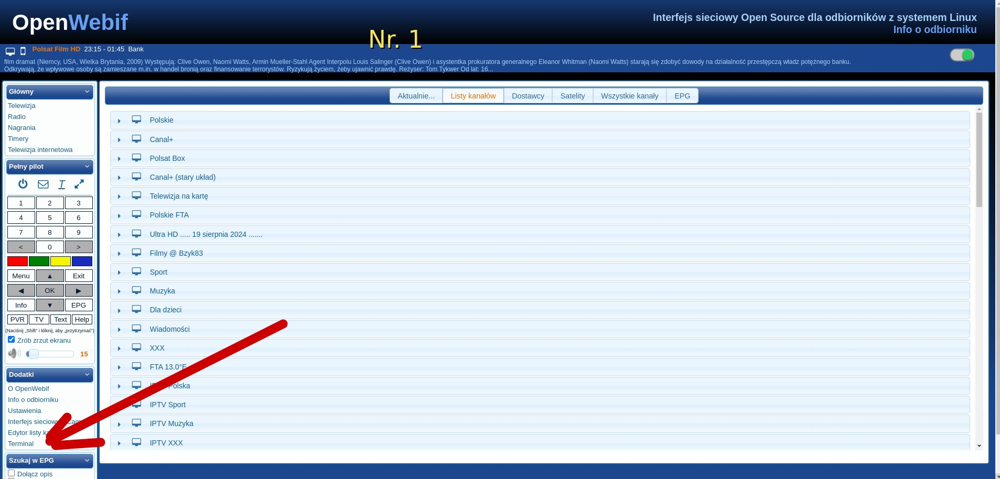

Witam na mojej stronie Paweł Pawełek
Poradniki
Poradniki dla użytkowników Enigma2
Wybierz konkretny problem albo czynność. Każdy kafelek prowadzi do aktywnej strony, PDF, zdjęć lub gotowej pomocy.

Poradniki główne
Pełny poradnik PDF dla pierwszej konfiguracji OpenATV 7.6.
PDFTerminal / OpenWebifLogowanie, wklejanie poleceń i instalacja przez terminal.
zdjęcia + PDFDane do OSCamWebIF OSCam, oscam.server, zapis i restart.
zdjęcia + PDFIPTV do XstremityPlik playlists.txt przez FTP bez wpisywania z pilota.
zdjęcia + PDFInstalacja imageInstrukcja dla popularnych tunerów Enigma2.
stronaPowiększenie pamięci ZGEMMAMateriały dla ZGEMMA H9.S / H9.2S.
ZIPDiagnostyka Enigma2Logi, procesy, sieć, miejsce i restart GUI.
komendySzybka pomoc
Krótka instrukcja i komendy do skopiowania.
OSCam — sprawdzenieKrótka instrukcja i komendy do skopiowania.
Picony / ServiceRefKrótka instrukcja i komendy do skopiowania.
Restart GUIKrótka instrukcja i komendy do skopiowania.
satellites.xmlKrótka instrukcja i komendy do skopiowania.
Hasło rootKrótka instrukcja i komendy do skopiowania.